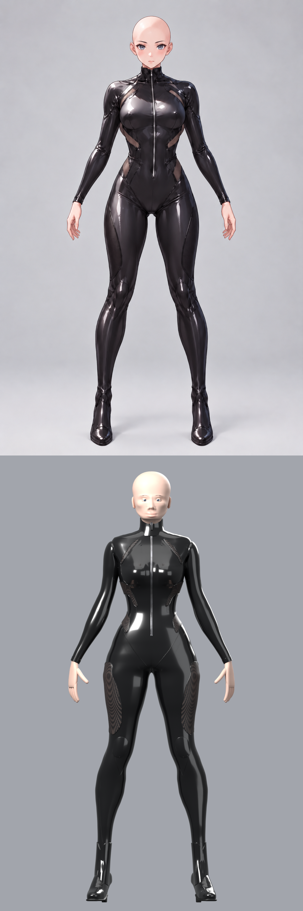
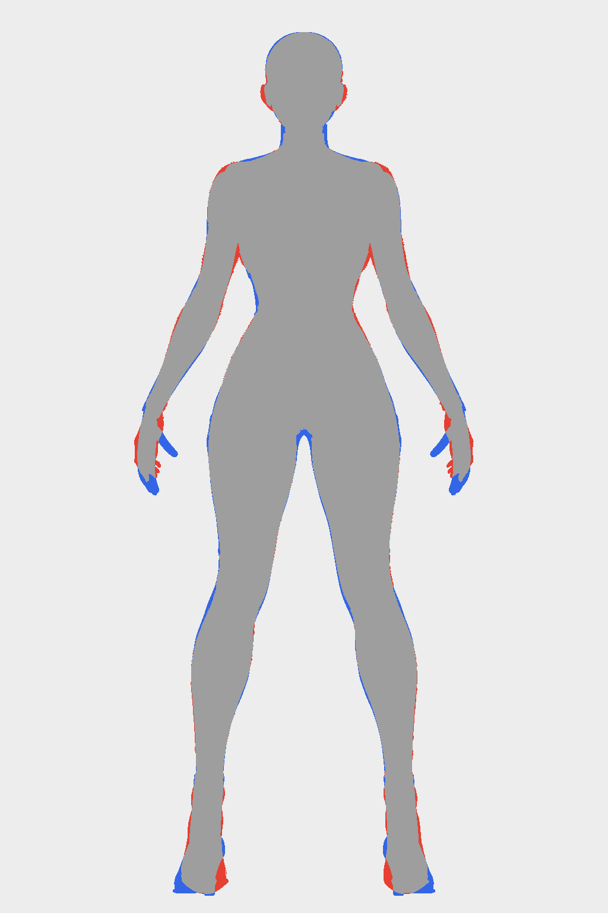

Beatrice — stage 1: body, suit, hands, boots
Built from Python alone on the shared character kit (charkit/bodysuit.py, Blender 4.5, Cycles) from the tables in
scripts/beatrice.py. The head is a bald placeholder for the face-and-hair stage. Character only, no props. See PROVENANCE.md.
Hip shape: concept vs front view
Left to right: the original concept (scaled to the front view's shoulders, waist aligned), the front view, the default build
(hips, seat and thighs to the concept's proportions), the sheet_hips build (the front view's own hips and thighs).

Front view vs model
Silhouette IoU, default build: whole 0.913; above the waist 0.963, waist to knee 0.873 (narrower hips on purpose), knees down 0.924.
sheet_hips: whole 0.948; 0.963 / 0.949 / 0.924.




Turnaround

Studio views


crimson: palette values only (suit, boots, net, skin, brows, iris)